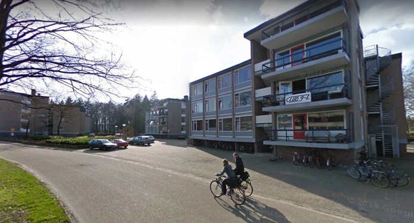

CLUB 9-2 Webpagina
Welkom op de officiële CLUB 9-2 webpagina! Je bent van harte welkom op deze mooie plek waar van alles over dit geweldige huis te vinden valt. Neem gauw een kijkje en vergeet niet, Van Niksdoen Krijg Je Dorst!


CLUB 9-2 is het vetste mannenhuis van Enschede. Ons studentenhuis wordt bewoond door een hechte groep van 11 mannen die graag dingen organiseren en ondernemen. Dingen die wij bijvoorbeeld doen zijn: Speciaalbieravonden, flatweekend, feesten, uitgaan of gewoon lekker samen niksdoen.
Opgericht in 1977 te Enschede.